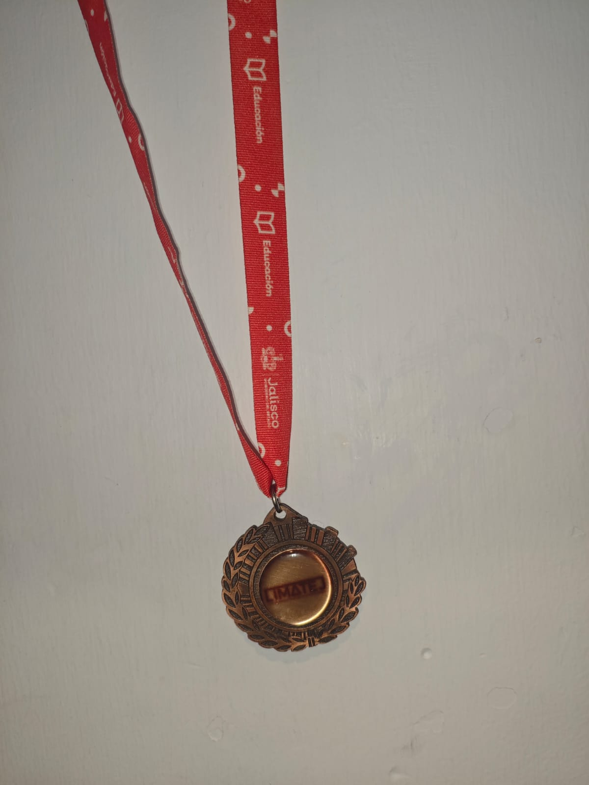
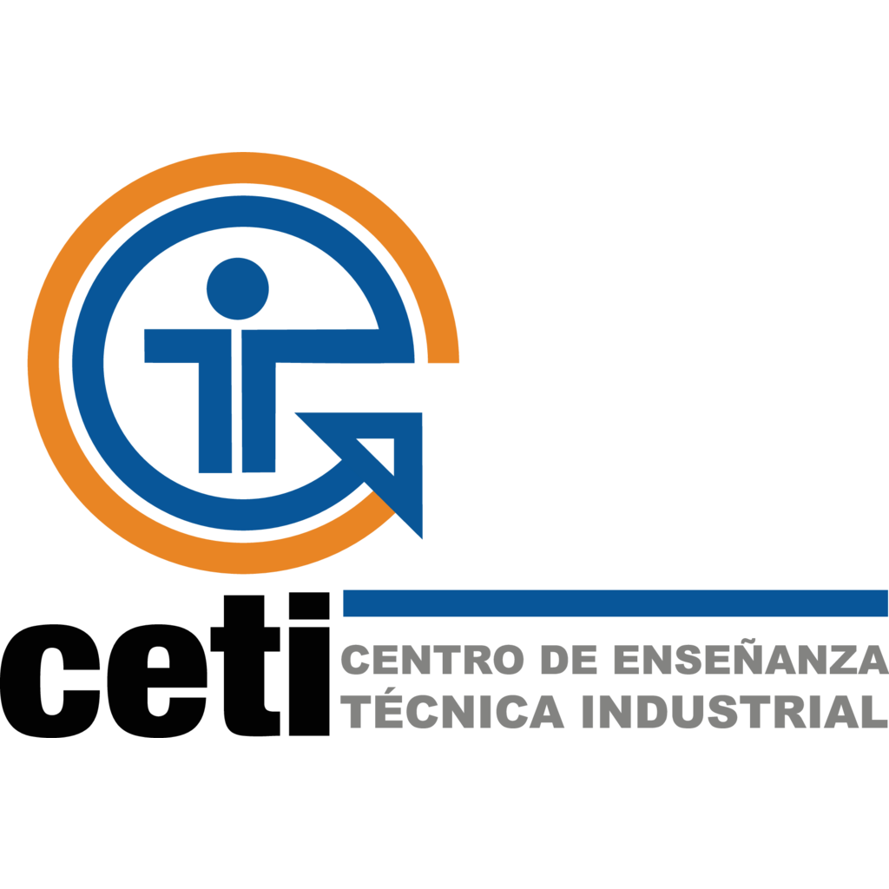

Acerca de mí
Soy estudiante del Centro de Enseñanza Técnica Industrial (CETI) en Tonalá, Jalisco, actualmente cursando el séptimo semestre de la carrera de Tecnólogo en Desarrollo de Software. Me considero una persona con gran facilidad de aprendizaje y curiosidad por entender cómo funcionan las cosas. Tengo experiencia programando en C, C++, C#, Java y Kotlin, y actualmente estoy aprendiendo HTML y CSS para ampliar mis conocimientos en desarrollo web.
Formación y Conocimientos
Programación y Desarrollo

Experiencia en diagramas de flujo, análisis de sistemas, desarrollo de proyectos en Java, C#, Arduino y Android Studio. He trabajado con bases de datos locales en MySQL y he realizado proyectos híbridos que combinan hardware y software con .NET Framework.
Electrónica
Conocimientos de electrónica básica, componentes, armado de circuitos y nociones sobre sistemas digitales y su funcionamiento.
Mantenimiento de Equipos
Capacidad para desarmar, limpiar y ensamblar computadoras, instalación de drivers y sistemas operativos Windows.
Redes y Comunicaciones

Conocimientos sobre topologías de red, direccionamiento IP, configuración de redes LAN y protocolos como HTTP, DNS y SSH. Además de experiencia en ruteo con puertos seriales y máquinas virtuales.
Mis Reconocimentos
Tengo numerosas participaciones en concursos de matematicas, como STEAM (Science, Technology, Engineering, Arts, Mathematics), SIMCC (Singapore International Math Contests Centre) asi como un 3er lugar en LIMATEJ (Liga de Matematicas del Estado de Jalisco)
Proyectos
Educación
Centro de Enseñanza Técnica Industrial (CETI)
Tecnólogo en Desarrollo de Software — 2022 – Presente